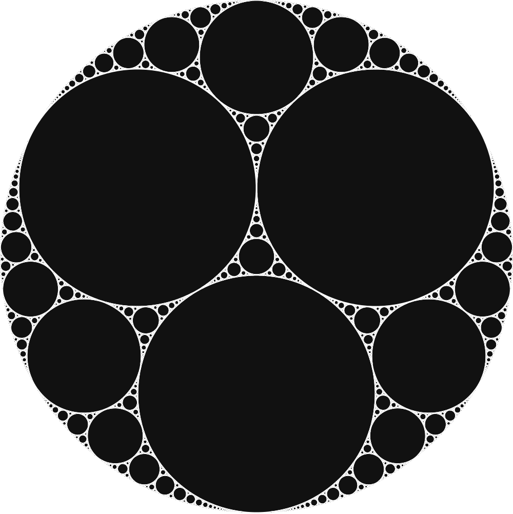

infinite
isoperimetric
partitions
[E. Paolini: Università di Pisa]
Trento ‐ Feb 28, 2023
Partition of the talk
-
infinite isoperimetric clusters
(M. Novaga - E. P. - E. Stepanov - V. M. Tortorelli)
published on networks and heterogeneous media  -
locally isoperimetric partitions
(M. Novaga - E. P. - V. M. Tortorelli)
to appear on transactions of the AMS
-
periodic isoperimetric tilings
(M. Novaga - F. Nobili - E. P.)
in preparation
Images


Images

(a)
(b)
(c)

(b)
(c)

thank you!